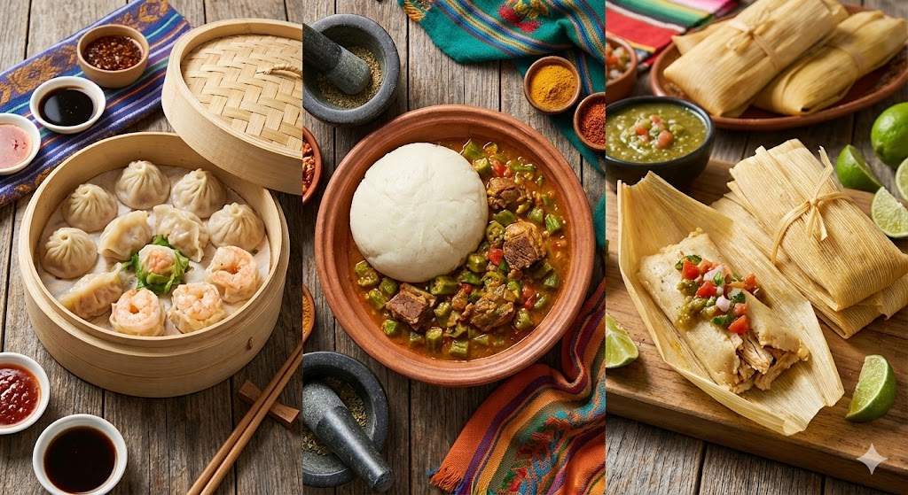

Globale Horizonte
Wir verlassen den Backofen. In vielen Kulturen wird Stärke gestampft, im Blatt gedämpft, fermentiert oder zu Grieß gerieben. Ein Blick über den Tellerrand.
1. Afrika & Maghreb: Stampfen & Dämpfen
Zwei riesige Regionen mit völlig unterschiedlichen Techniken.
West- & Zentralafrika: "Swallows"
Hier wird gekochte Stärke (Maniok, Yamswurzel, Kochbanane) in riesigen Mörsern zu einer zähen, elastischen Masse gestampft. Man formt Kugeln und schluckt sie ("Swallow") mit Suppe, ohne zu kauen.
Nordafrika: Couscous
Couscous ist keine Beilage wie Reis, sondern eine Kunstform. Hartweizengrieß wird mit Wasser zu winzigen Kügelchen gerieben ("gerollt") und dann – ganz wichtig – mehrfach über Brühe gedämpft. So bleibt er locker und aromatisch.
2. Südindien: Die Linsen-Revolution
In Europa nutzen wir Hefe oder Sauerteig für Getreide. In Südindien fermentiert man Hülsenfrüchte.
Idli & Dosa
Reis und Urad-Dal (schwarze Linsen) werden eingeweicht und nass gemahlen. Wilde Hefen in der Luft lassen den Brei gären.
Idli: Der Teig wird in Formen gedämpft -> weiche, weiße Küchlein.
Dosa: Der Teig wird hauchdünn gebraten -> knusprige Riesen-Crêpes.
3. Lateinamerika: Garen im Blatt
Vor der Erfindung von Töpfen nutzte man das natürlichste Kochgeschirr: Blätter. Sie schützen den Teig vor Wasser und geben Aroma ab.
- Maisblatt (Tamales): Eher neutraler Geschmack, lässt Dampf gut durch.
- Bananenblatt (Hallacas/Suman): Gibt ein tee-artiges, wachsiges Aroma an den Teig ab und glänzt.
4. Japan: Mochi & die "Q"-Textur
In Asien liebt man eine Textur, für die wir im Deutschen kein Wort haben: "Q" oder "Chewy" – elastisch, gummibärchen-artig, bissfest.
Mochi ist das Extrembeispiel. Spezieller Klebreis wird gedämpft und dann in einem hölzernen Mörser (Usu) mit schweren Hämmern so lange geschlagen, bis die Reiskörner ihre Struktur verlieren und zu einer einzigen, extrem zähen Masse verschmelzen.